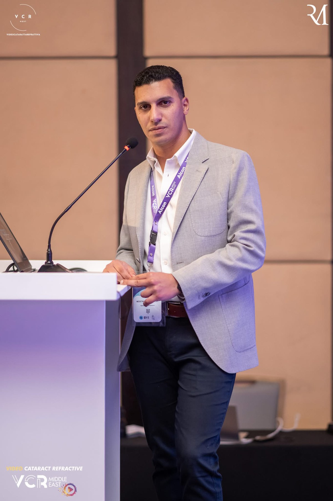
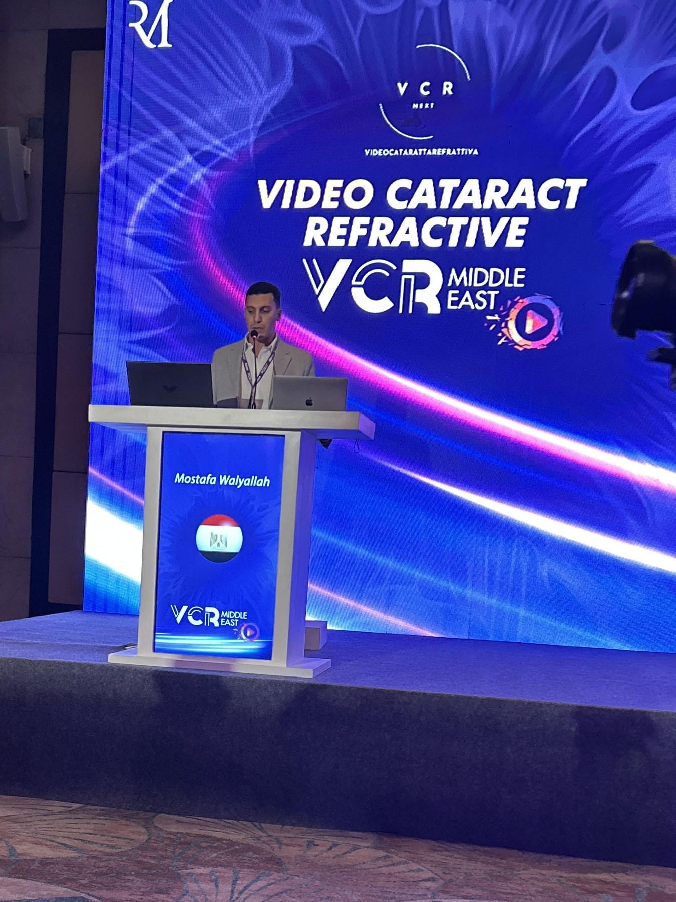

Dr. Mostafa Walyallah — Ophthalmology Specialist
A cataract and vitreoretinal surgeon with an active practice in laser vision correction and intravitreal therapy. Clinics in Ismailia, retina department at Ferdaws Eye Hospital in Zagazig, and a weekly Cairo retina clinic on Tuesday evenings.


Subspecialties
- Cataract Surgery: Phacoemulsification with monofocal, multifocal/trifocal/EDOF, and toric intraocular lenses — including complex cases.
- Vitreoretinal Surgery: Retinal detachment, vitreous hemorrhage, macular hole, epiretinal membrane, and diabetic retinopathy.
- Laser Vision Correction: LASIK, SMILE, and PRK — following a thorough corneal and retinal evaluation.
- Intravitreal Injections (Anti-VEGF): treatment of age-related macular degeneration, diabetic macular edema, and retinal vein occlusion.
Credentials and training
- Member of the Royal College of Ophthalmologists, London (CertRCOphth).
- Vitreoretinal Surgical Fellow at Ferdaws Eye Hospital, Zagazig — retina department.
- Former Resident at the Memorial Institute of Ophthalmic Research (MIOR), Cairo.
- Winner of multiple international video-abstract awards in cataract and refractive surgery:
- MIOR Film Festival — Best Surgical Video Award.
- Sinjab Academy Video Award.
- VCR (Video Cataract Refractive) — Best Video Submission.
- ESCRS 2025 Copenhagen — Video Abstract Award for "Surprise True Capsular Exfoliation", sponsored by Sinjab Academy and the Emirates Society of Ophthalmology (ESO).
Patient care philosophy
Choosing a treatment strategy or surgical technique is a medical decision — not a marketing one. There is no single "best operation" and no single "best lens" for everyone. What's right for a given eye is defined by the measurements, the clinical examination, and the patient's lifestyle and priorities.
Clinic commitment: clear explanation of the diagnosis, honest presentation of the options (including not operating when that's the better choice), and clarity about what can scientifically be expected — without inflated promises.
Practice locations
Primary clinic — Ismailia: Ismailia Eye Center, Mohammed Sabry Abou Alam Street, El Sheikh Zayed, Ismailia. Clinic hours: Saturday and Thursday, 7–11 PM. Wednesdays are reserved for surgery — no walk-in clinic that day.
Retina department — Zagazig: Ferdaws Eye Hospital, Zagazig. Operating lists and specialist retina clinics. By referral.
Cairo clinic — Tuesday evenings: a weekly retina clinic at 8 PM. For the address and booking, please reach out via WhatsApp.
A professional note
Content on this site is educational — it does not replace an in-person exam. A suitable treatment plan begins with a consultation and accurate measurements.